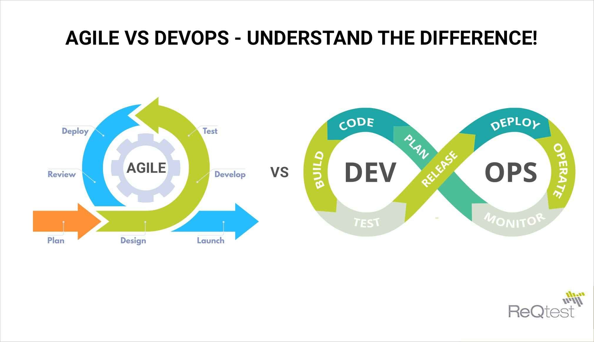

Diferencias de DevOps con Otras Metodologías Ágiles:
Enfoque integral, desarrollo y operaciones juntos: Una de las principales diferencias es que DevOps no se enfoca solo en el desarrollo de software, sino que integra tanto las operaciones como el desarrollo. Es un enfoque colaborativo que involucra a los equipos de desarrollo y operaciones para crear un ciclo continuo de entrega e implementación.
Automatización en todo el ciclo de vida: La automatización es uno de los pilares fundamentales de DevOps. DevOps automatiza todo el ciclo de vida del software, incluyendo compilación, pruebas, despliegue, integración continua (CI) y entrega continua (CD). Además, incluye la infraestructura como código, lo que permite gestionar y aprovisionar la infraestructura de manera automatizada.
Enfoque cultural y colaboración: En DevOps, la cultura de colaboración es fundamental. Los equipos de Desarrollo y Operaciones deben trabajar juntos de manera fluida, eliminando las barreras tradicionales entre ambos. Esto promueve una mayor comunicación, alineación de objetivos y resolución rápida de problemas. También incluye roles y responsabilidades compartidas, donde todos los miembros del equipo colaboran para mejorar el proceso de entrega.
Enfoque en la retroalimentación y mejora continua: DevOps se basa en un ciclo continuo de retroalimentación, lo que significa que se monitorean constantemente las aplicaciones en producción, se obtienen datos sobre el comportamiento del software y se realizan mejoras de forma continua. Esto incluye el monitoreo del rendimiento, la seguridad y el comportamiento de los usuarios.